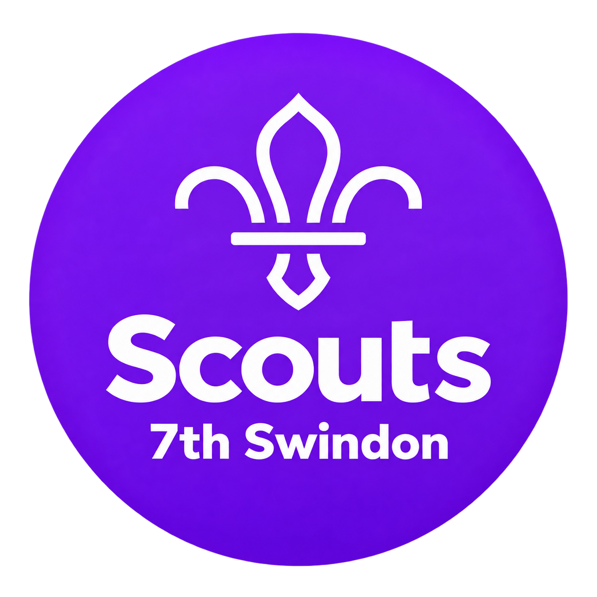
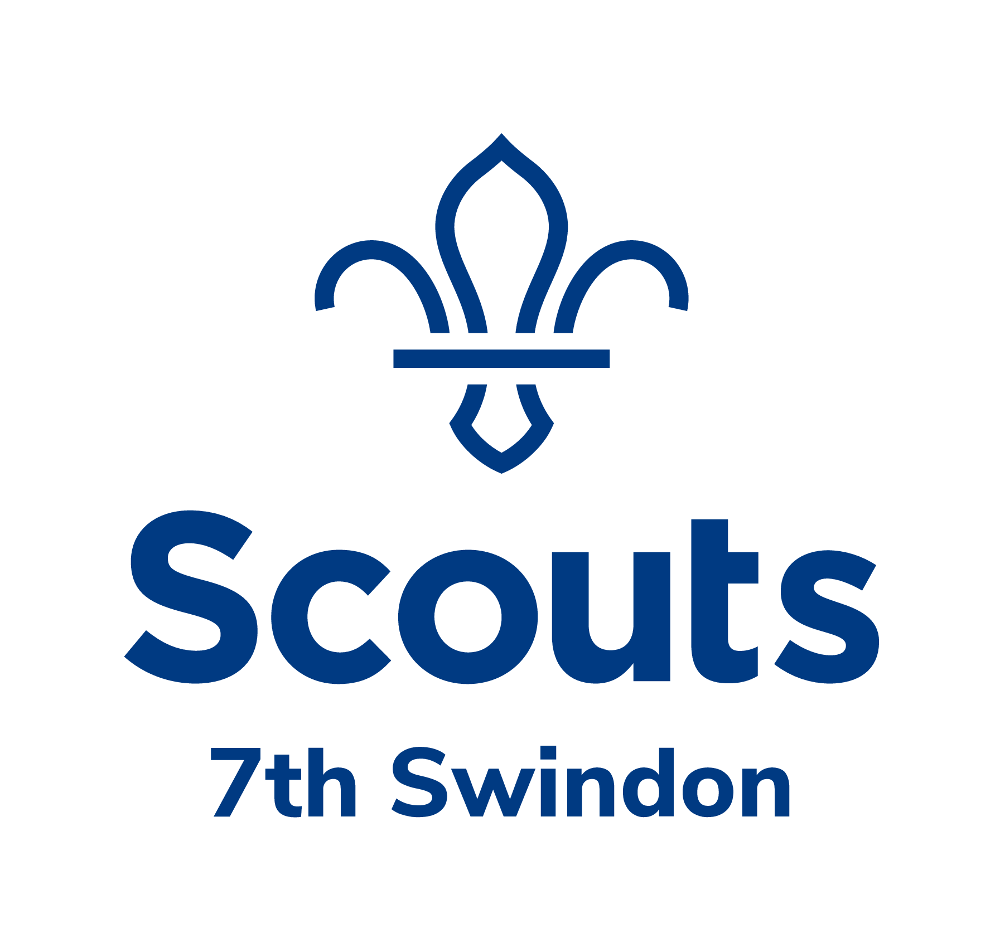
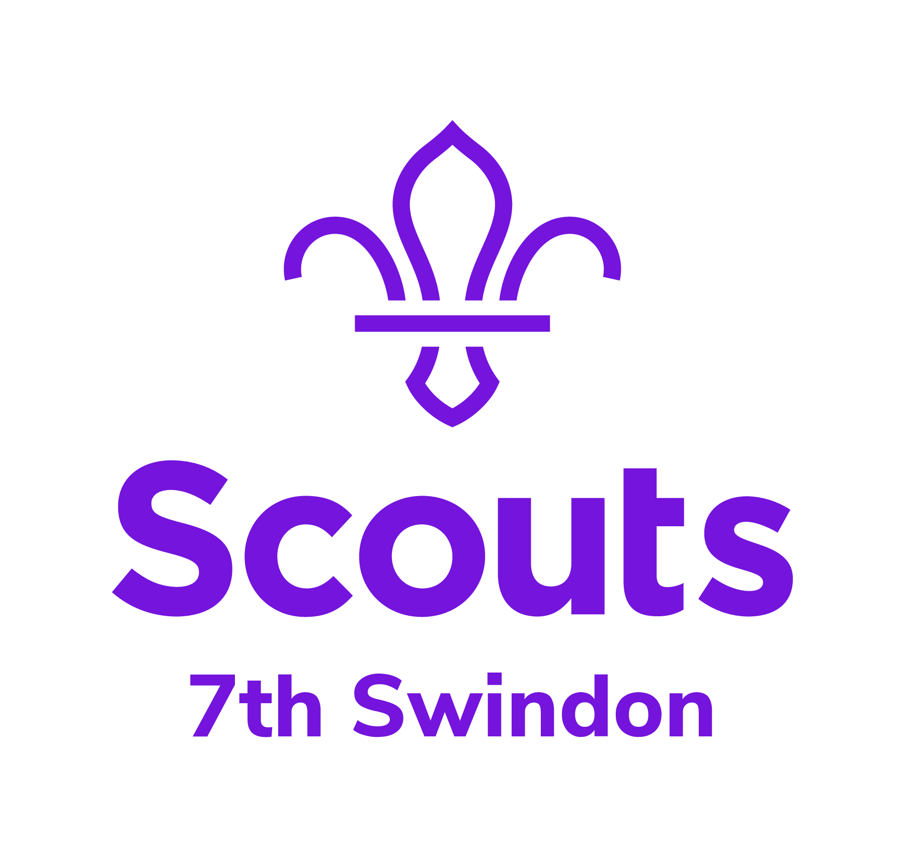
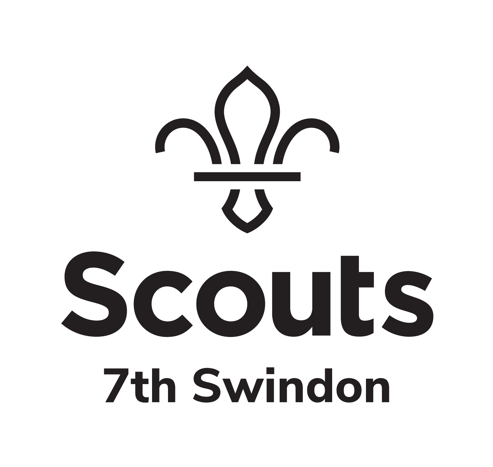

Home › Brand and Assets
Brand and assets
Make it feel like Scouts.
Everything you need to keep 7th Swindon looking consistent: our approved logos, colours and the Scouts font, with the official national guidance close at hand.
PDF
Open the PDF ↓
Scouts brand guidelines
The complete national guide, linked from the official UK Scouts brand page. Around 20 MB.
Our logos
01 — Group logosSix approved logos for 7th Swindon, ready to download as original PNG files. Use the circular badge where a compact mark works best, and the stacked version where there is room for the full wordmark.


Circular · Purple
Download PNG ↓
Circular · Black
Download PNG ↓

Stacked · Navy
Download PNG ↓

Stacked · Purple
Download PNG ↓

Stacked · Black
Download PNG ↓
Our colours
02 — PaletteThe palette used across our website and 7thPortal. For print and national materials, always defer to the official brand guidelines above.
Purple
#6D28D9Purple dark
#4C1D95Navy
#1B1533Green
#0F9D78Yellow
#F5B800Warm
#F6F4F0Our font
03 — TypographyNunito Sans is the official Scouts typeface, and the one used everywhere on our website. Download the pack below, then unzip it to find the fonts and the included licence.
Skills for life.
ABCDEFGHIJKLMNOPQRSTUVWXYZ abcdefghijklmnopqrstuvwxyz 0123456789
Regular 400Adventure starts here
Semibold 600Adventure starts here
Bold 700Adventure starts here
Extrabold 800Adventure starts here
Sound like us
04 — Tone of voice01
Purpose and personality
Help young people find a place to belong and develop skills for life. Let that purpose guide every message.
02
Logo and identity
Use the approved logos above. For adaptable artwork and templates, the Scouts Brand Centre has more.
03
Colour and type
Keep to the palette and to Nunito Sans. When in doubt, the official guide is the reference.
04
Words and tone
Sound friendly and conversational. Use everyday language, and check the style guide for spelling and terms.
Keep these close
05 — Official resources
FONTVisit ↗
PDFOpen ↓
WEBRead ↗
HUBVisit ↗
Nunito Sans on the Brand Centre
The font is also available from the Scouts Brand Centre, sign in required.
How we talk
A practical writing toolkit: headlines, everyday messages and bringing skills for life to life.
Scouts style guide
Look up spelling, punctuation, capitalisation and Scout terminology.
Scouts Brand Centre
Templates and resources for posters, stationery, signage and social media.
Always check the official source
This page is a quick reference for 7th Swindon. The national documents take precedence, so check the Scouts brand page for future updates.